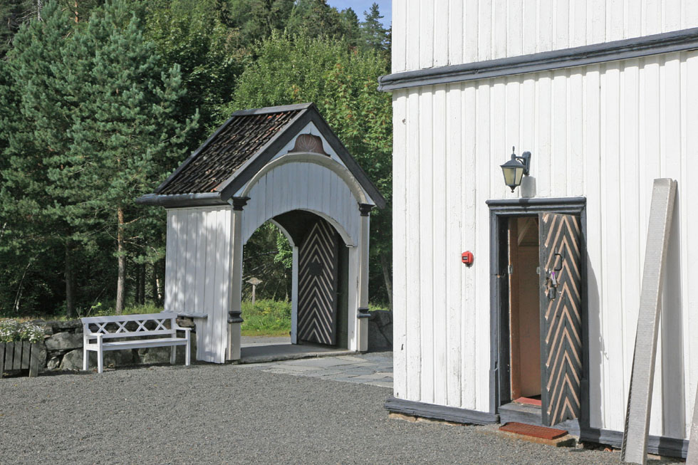
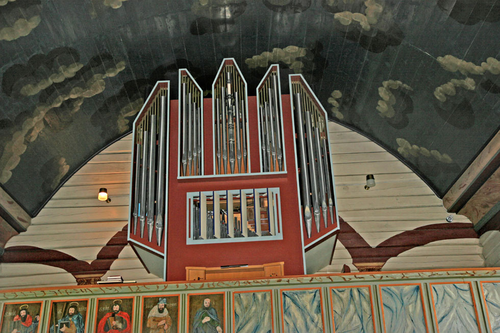
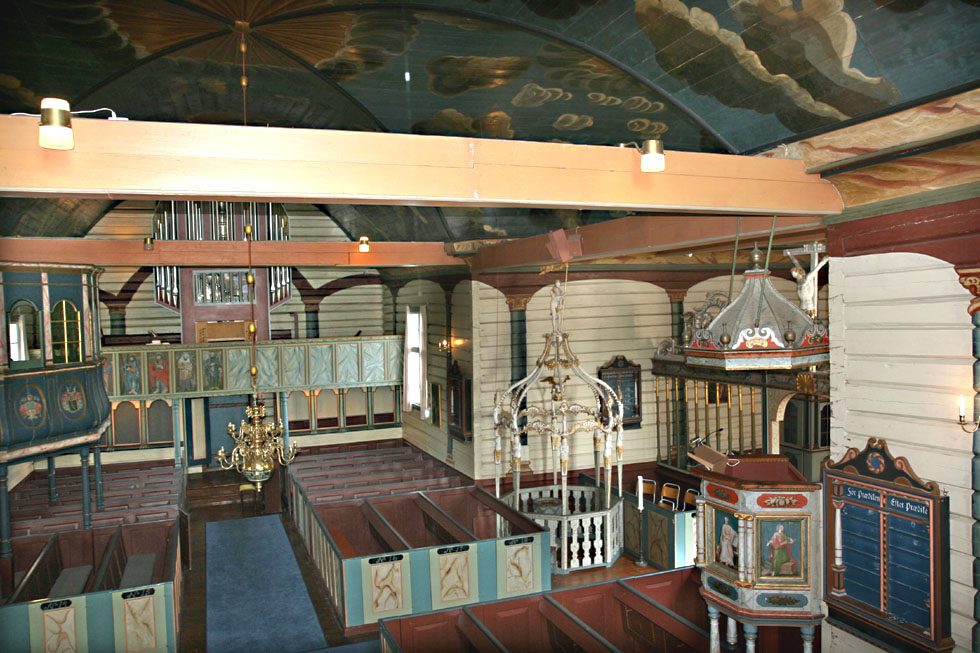
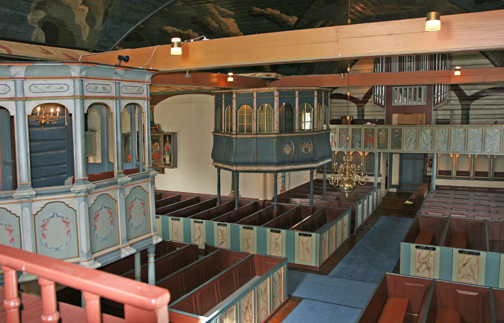
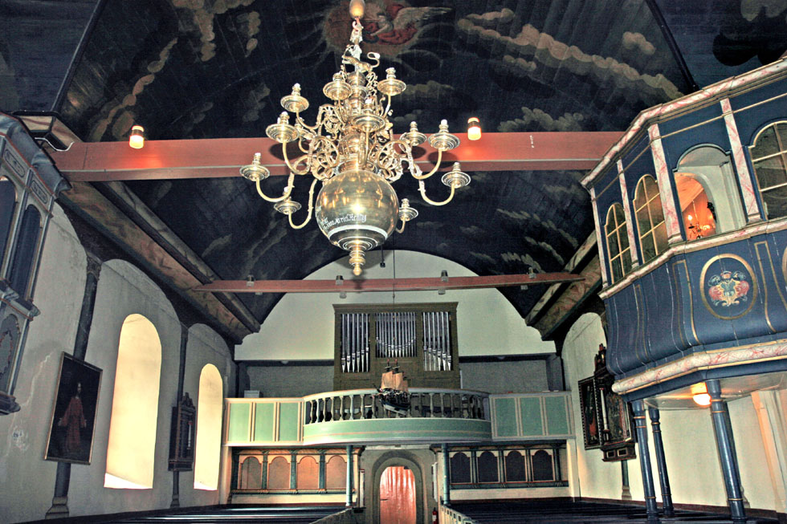
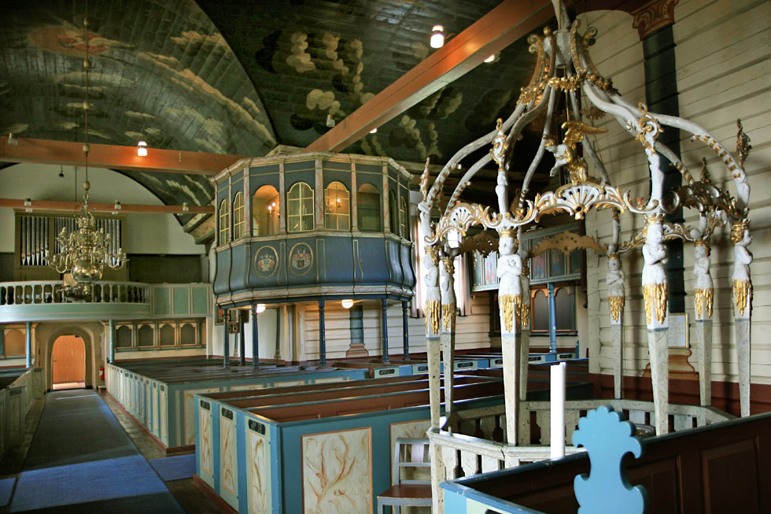
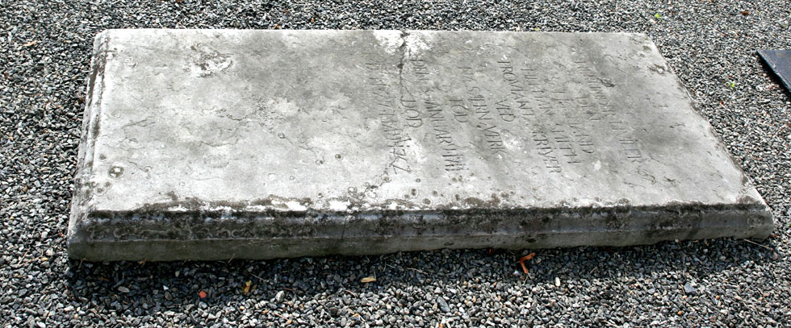

Holt kirke
Foto: Torvald Slettebø, Universitetet i Agder, Seniorsenteret
Tekster: Randi Stensby, Bjarne Karsten Nenseter
Kilder:
Muntlig kilde, vår omviser i kirken, Øyvind Bjorvatn
Skriftlige kilder: Særlig Øyvind Bjorvatn: "Holt Kirke Jubileum 2003".
Holt bygdebok ved S. Svensen Holt Kirke ca. 1100 - 1953 ved Telleiv Gaaskjenn Lisbeth Highley: Elise Tvede - Svend Foyns første kone
Holt var et godt valg for de første landnåmsmenn som kom inn fra kysten. De ryddet eik og kratt og la grunnlaget for de første storgårdene. Kanskje samlet man seg i et hov, som med tiden ble ombygd for en ny tro i et ordnet kristent samfunn.
Slik vi ser kirken der den ligger høyt og fritt innrammet av kirkegården med gammel mur, og med staselig inngangsportal, viser den tilbake på 800-hundre års kristen tradisjon. Før steinkirken, som i dag er en del av den nåværende kirken, ble bygd på 1100-tallet, var Holt norrønt "hellig sted", et gammelt kult-sted. Vi kan lure på hvor dramatisk den var, overgangen mot kristen tid, den gang hov ble til kirke.
Dit styrte den gjæveste drott sin gang. Der knelte den stålkledde kjempe, og lærte ved messe og ottesang den stolteste vrede å dempe. A. Reitan
'Her går den gamle ferdselsveien forbi. Den har hatt beskivende navn gjennom tidene: Kongeveien, Postveien, Stålveien, Vestlandske hovedvei, men for holtingene først og fremst Kirkeveien. Kirken skimter vi helt til venstre. Til høyre prestegården og rødmalt almuestue.
Til denne sletta har man flyttet det eldste fornminne i Holt som viser gravskikker. Dette er et gravmonument av sjelden type, flyttet fra Dalane, noe lenger sør, hvor steinene sto i et større gravfelt. Tre bautasteiner danner hjørnene i trekantgraven. En hellelignende stein er reist i sentrum. Graven er fra 200 til 300 e.Kr.
Denne steinsettingen er et av de få minnesmerker vi har fra gammel kult her i Holt. Tidligere tiders gravhauger er det få spor igjen av.
Feltet ble utgravd av Universitetet i Oslo i 1957. Det hadde tydelige spor etter gravrøvere.
"Etter slike menn som det hadde vært mannsmot i, skulle de reise bautasteiner. Det hadde Odin bestemt". - Snorre Sturlason i Ynglingatal.
Akvarellen av Holt kirke og prestegård fra 1832, forteller om utvikling av kulturlandskapet. Det store kirkesognet ble delt i 1812. Dybvåg ble skilt ut, og personelkapelan i Holt, N. Tvede, ble utnevnt til sogneprest i Dypvåg, og her ble Elise Amalie Tvede født i 1815. Den 17 år gamle Elise Amalie malte bildet det siste året hennes far var prest. Bildet var et minne hun tok med seg til Amerika, dit hun senere emigrerte. Helt overraskende kom nylig en kopi tilbake til Norge. Originalen eies av Elises oldebarn, som bor i Texas. Den var ukjent i Norge inntil den amerikanske forskeren Charles M. Russell overlot en kopi til By- og Sjøfartsmuseet i Lillesand.
Portrett av 15 år gamle Elise Tvede, malt av vår store portrettmaler Mathias Stoltenberg (1799 - 1871), utdannet i København og representert med 13 portretter på Nasjonalgalleriet. Museumsbestyrer Alvhild Gulbrandson ved Lillesand by- og sjøfartsmuseum har skaffet portrettet av Elise Tvede og opplysningene om henne.
Mikael Selmer fikk dette bildet. av en pasient da han var distriktslege i Holt. Elise hadde slektninger på Næs jernverk og kontakten hun fikk med skolen Jacob Aall drev der, og det intellektuelle miljøet, betydde mye for utviklingen av hennes personlighet og interesser i livet. Hun var godt skolert på de felt som "dannede" piker burde beherske. Men foreldrene sørget for at hun fikk mer boklig lærdom og teoretiske kunnskaper. Det var uvanlig at unge embedsmannsdøtre tok seg betalt arbeid. De kunne til nød bli guvernanter og bo i en familie. Men Elise "holdt skole" i Tønsberg. Skolen ble drevet av slektninger og venner fra Næs jernverk.
Det var i Tønsberg hun møtte "sin dyrebare Svend". Det var to sterke personligheter som giftet seg i Vestre Moland kirke i 1839. De delte et religiøst livssyn og troen på at det var en plikt å utføre uegennyttig arbeid for de fattige. Sven Foyn var skipper, og brukte mye tid og krefter på arbeidet sitt. Han hadde sin mening om hvordan en kone burde oppføre seg. Elise var fast bestemt på å bruke sitt gode hode til beste for fler enn sine nærmeste. Skilsmisser var en sjeldenhet og førte til sosial fordømmelse. "Vi passet ikke sammen", skrev hun. "Vi skiltes som venner, og Svend Foyn har i sannhet vist seg som en trofast venn, da han etter min anden manns død flere gange hjalp meg med betydelige pengegaver." Det var da hun hadde emigrert, og var farmerkone i Texas. Hun hadde giftet seg med Wilhelm Wærenskiold og fått tre sønner. Hun holdt kontakten med Norge gjennom brev og atikler. Hun underviste de norske barna, hun tok initiativ til å få bygget skole og kirke. Hun startet, bokklubber, studiesirkler og avholdslag. Hun ble kalt "The Lady with the Pen." Hun deltok ivrig i samfunnsdebatten, blant annet om slavespørsmål og rusproblem. Hun døde i Texas i 1895.
Maleri av Holt kirke, prestegården og allmuestuen, som den gang var okergul, er malt i 1840. Den gang var tårnet malt svart. Fra 1901 har det vært hvitmalt. Kunstmaleren Knud Geelmuyden Bull var elev av J. C. Dahl og I. M. Calmeyer. Han er bror av den verdensberømte fiolinisten Ole B. Bull. Det er presten Andreas Fayes kyr som beiter på jordet utenfor den solide kirkegårdsmuren.
Holt var opprinnelig hovedsognet og stort og rikt. Helt til 1705 omfattet Holt prestegjeld det som senere er blitt i alt 9 sogn: Holt, Tvedestrand, Dypvåg, Flosta, Tromøy, Stokken, Østre Moland, Arendal, og Barbu.

I midten Almuestuen og to stolpehus. Stallrekken til venstre ble revet i 1939, stolpehusene noe tidligere. Hestestallene var nødvendige for kirkefolk som kom kjørende langveis fra, omtrent som parkeringsplasser er nødvendige i dag for bilkjørende.

Prestegården, ferdigbygd i 1718, står som en staselig herregård den dag i dag. Det som gjør Holt prestegård spesiell er at i to av stuene i annen etasje, startet i 1839 Christiansands Stiftsseminar. Stiftet, bispedømmet, omfattet også Rogaland. Her var de seminarister, dikteren Arne Garborg fra Jæren, den senere statsminister Jørgen Løvland fra Evje, og skolemannen Andreas Feragen, som senere ble degn, klokker, i Holt i 60 år.
I den rødmalte allmuestua mellom prestegården og kirken hadde seminarelevene et rom til sang- og musikkøving. Her hadde sangkoret øvelser og elevlaget møter, hvor Arne Garborg var en ivrig debattant.
Da Norge ble kristnet og kirker bygd, fikk bygdefolket fri fast gravplass av kirken. Det ble nok gjort forskjell også i døden. 1346 sendte erkebisp Arne ut et rundskriv der han ber alle om å vise vørnad for de døde og følge dem til den til siste kvilestaden, fattige og rike, for i døden er alle like fattige.

Holt kirke er blant de eldste på Sørlandet. Slik den står i dag med korsarm, tårn og spir er den vokst ut av den opprinnelige rektangulære steinkirken. Ettersom folketallet økte utover på 1700-tallet ble det behov for å utvide kirken. Den østre steinveggen ble revet , to fløyer i solid lafta tømmer satt til, og Anno Christi 1753 ble kirken forandret fra en langkirke til en korskirke.
I "Holts Prester og Prestegjelds Historie" skriver Andreas Faye: "Uagtet der i de faaregaaende Presters Tid var foretaget betydekige Reparationer ved Holt gamle murede Kirke, saa befandtes den nu ei længere at kunne romme den raskt tiltagende Folkemængde. Man maate derfor aaret 1753 foretage en stor Udvidelse. Kirkens østreMur ble nedrevet og den murede Langkirke forandret til en Korskirke ved Tilbyggelsen af anseelige Fløye af Tømmer."
De tykke svarte strekene, markerer murene i steinkirken. Vi vet lite om byggingen av steinkirken, og vi undres: Hvor kom steinene fra, hvem hadde kompetanse til å reise et slikt kirkerom i kistemur. I dag ville vi kalle det et stort prosjekt, som fikk noe statsstøtte. Sigurd Jorsalfar (1103 - 1130) hadde innført tiende til fordel for kirken.
To bilder i omtrent samme bildevinkel, kanskje sett fra talerstolen. Bildet til venstre fra før 1906. Like overfor Kapteinstolen går det en trapp opp til et galleri - et kor, eller trev - som det også kalles. Fram til 1840 satt folk fra blant annet Vivesøl, og galleriet ble derfor kalt Vivesølkoret. Men så kom kirkeorgelet, og dermed fikk koret nytt navn: Orgelkoret. Fra Orgelkoret kunne folk gå videre til Brugskoret, som hang på nordveggen i steinkirken. (Venstre bilde). Brugskoret hadde plass til noen av funksjonærene ved Næs verk. Dette galleriet ble fjernet i 1906, samtidig med at orgelkoret ble ombygd. Da kunne det bli plass til det gamle alterbildet her på den ledige nordveggen.
Kirkefolket var vant til å fryse under gudstjenesten, men så for bare drøyt 100 år siden, ble det satt inn to kakkelovner, midt i kirken, en på hver side av korskipet. Varmt ble det vel ikke, men de slapp å fryse. Klokker Andreas Feragen: "To store Kakkelovne er anbragt i Kirkens Midte, og kom i stand ved frivillige Sammenskud i året 1880, hvorved inkom i alt kr 867,80 der strak godt til baade Fundamentering, Ovne og Kobberrør".
Danskekongens kriger var kostbare. I 1719 bestemte kongen at de norske kirkene kunne selges. Kristiansandsbiskopen protesterte til ingen nytte. Alle kirker ble taksert, og folk fikk til sin forferdelse vite at kirkene ble lyst ut til offentlig auksjon. Holt hovedkirke og Tromøy anneks ble solgt 7. november 1724, men kjøperen, stiftsbefalingsmann Liljenpalm i Kristiansand, solgte allerede 5. januar 1725 kirken til bygdefolket.
Gjennom århundrene er Store-stette, hovedporten inn til kirkegården og kirken, bevart og er et vakkert minnesmerke for kirkefolket om slekter som har gått foran. Porten ble laget i 1756, av Erik Snedker. Det har trolig vært to overbygde porter i kirkegårdsmuren, Lille-stette mot sør, men denne åpningen har ikke lenger noen overbygning.
Det var ikke uvanlig at det sto en gapestokk på kirkebakken. Kirketugt er et ord omtrent uten innhold i vår kirke i dag. Men det har vært reelt både før og etter reformasjonen. I kirkeregnskapet for Holt for 1768 er anført som utgift til Henrik Myren for en gapestokk 2 Mark, til smeden for jern dertil 12 skilling.. 1765 avskaffedes ved kongelig forordning ei blot den offentlige Absolution for Leiermaaal, men også Bøder og anden Straff for samme" Dette bekymret sokneprest Hans Speilberg. Han " fryktede nemlig for at en gavnlig Dæmning mod Tidsalderens Letsind og Usædelighed derved skulde borttages".
I det opprinnelige kirkerommet innenfor denne metertykke kistemuren, sang de den gang som nå Kyrie, Gloria, og Sanctus. Av selve messen som var på latin, skjønte folk lite. Men mange av de katolske prestene var av bondeætt og kjente landets sed og skikk, og de forsto hverandres tale. Reformasjonen kom helt overraskende på allmuen, og ble innført med tvang i 1536. Etter kongelig ordre skulle man forandre sin tro. Det kom nye bud og nye forbud. Mange av de lutherske prestene kom fra Danmark.
Korene hadde egen inngang utenfra. Denne trappegangen fører opp til prestekoret, der prestefamilien satt i sitt eget pulpitur.
Utstillingsmonter plassert i det lyse rommelige inngangspartiet i tårnfoten eller våpenhuset. Denne nederste delen av klokketårnet, tårnfoten, er trolig bygd som et tilbygg til steinkirken i 1680-årene. Navnet våpenhus er en arv fra gammel tid, overført fra hov og ting til kirke: "Varg i veum", ulv i helligdommen, er et uttrykk fra norrøn tid om den som krenket et fredlyst sted. Her i våpenhuset måtte kirkegjengerne henge fra seg våpnene.
Holt kirkes "tavle" Anno 1775. Under gudstjenesten var det vanlig at kirkevergene gikk omkring med en tavle eller en pose på en stang for å samle inn gaver, tavlepenger.
Siden tavlen er utstyrt med bjelle, kan vi tillate oss å tro at det var for å vekke folk opp fra gudstjenestesøvn. Kgl forordning 1645: "For at raade Bod paa den skadelige Søvn i Kirken, skal i hver Kirke ansettes en som med en lang Stok skulde støde til dem der var falne i Søvn".
Ved utgangen i våpenhuset står en imponerende kirkebøsse, eller kirkeblokk. Den er utført av tusenkunstneren og originalen Torje Tallaksen Holtsmyr. Han kalte seg "Friherre av Frydenlund". Skjønt han var en dyktig håndverker, visste han hva det var å være fattig. På kirkebøssa har han malt en stakkar med tiggerskål. Når menigheten etter gudstjenesten puttet noen skilling på blokka, leste de: "Denne Blok er for denne Hols Menighets Fattige. Jeg beder alle og enver at I tenker paa ver fattiges trang og opner faderhaanden for dem".
Denne vakre parafinlampa henger i våpenhuset. På muren ved siden av lampa er det risset inn årstall: 1682, 1753, 1906. "I året 1682 foretoges betydelige Reparationer", skriver Faye i 1895. 1753: Ombygging til korskirke. 1906: Omfattende restaurering.
Lars Albretsøn fra Øvre Nes og hans tømmermenn og snekkere har all ære av kirkebygget. Om bonde og kirkebygger Lars Albretsøn forteller Gabriel Scott i romanen "Jernbyrden." I 1731 bygde han tårnet på Høvåg kirke, og han støttet Christian Lofthus i bondreisningen mot embedsmennene og deres maktmisbruk.
I taket over døra inn i kirkesalen kan vi lese om kirkebyggingen.
Tekst om den meget vellykkede restaureringen.
Fra våpenhuset kommer vi inn i en av de vakreste og rikest utstyrte kirker i Sør-Norge. Den gamle steinkirkedelen fra 1100-tallet og de tilbygde korsarmene forener den aller eldste og den nyere kirken fra 1757. Her er som små lysthus på veggene, pulpiturer eller kor for standspersoner. Skillet mellom skip og kor er markert med høye dreide søyler, og en oversville med skulpturer og rokokkoornamenter i hvitt og gull. Foran korskranken og til venstre, kirkens elegante dåpshus.
Under galleriet i søndre korsarm er det to lukkede stoler, en på hver side av midtgangen. Her hadde lensmannsfamilien plass, og det var her han fikk sin kirkebenk Petter Ellingsen Strengereid, som gjenytelse for kirkeskipet som henger over midtgangen.
Nordsiden, til høyre i bildet, er kvinnesiden. Sørsiden med de store vinduene er mannssiden. Bakerst på denne siden har vi "Kapteinstolen". Fra 1791 var den forbeholdt militære personer og deres familier. Det kan ha vært "Kapteinstol" også lenger tilbake. I regnskaper fra 1602 er gården Østeraa oppført som offisersgård.
Gammelorgelet i Holt er laget av Peter Adolph Albrechtsen i 1840. Det vil si at det er bygd av "en nordeuropeisk komet i orgelbygg". Det har stor musikk- og kulturhistorisk verdi, sier riksantikvaren. Det er bare noen få av disse orglene som er bevart, og etter restaureringen i 2001 er orgelet igjen i bruk. Det er imponerende at Holt kirke fikk sitt første orgel så tidlig: "Omkring 1840 havde Menigheden ved frivillig Sammenskudd skaffet et Orgel", skriver degnen Adreas Feragen. Da det ble vedtatt å restaurere dette gamle orgelet, selv om nytt var anskaffet i 1975, skjedde det samme. Da orgelkomiteen startet en stor innsamlingsaksjon, strømmet pengene inn.
Kirkeskipet tar seg flott ut der det henger fra taket i den opprinnelige steinkirkedelen. Skipet har korrekte detaljer og er utført av en kyndig modellbygger. Det har årstallet 1768 og initialene PESST , for Peder Ellingsen Strengereid. Han fikk til gjengjeld rett til å sitte i en innelukket kirkestol nr 7 i søndre korsarm. "Maa bruge og beholde saa lenge de lever og forbliver Lemmer af Holts Menighed, Samt tillige betaler udi Aarmaalet Halvannen Rigsdaler." Salg av benker var en av kirkens inntekter.
I året 1975 fikk kirken nytt orgel. Under orgelgalleriet er to lukkede stoler. Den vi ser til venstre kalles Lensmannsstolen. Her satt sognets fanger under gudstjenesten. Det var gitter foran det vesle vinduet mot vest, ut mot kirkegården. Lensmannsbetjenten satt ytterst på benken. Tvers overfor lensmannsstolen, under trappa, hadde visstnok de ugifte mødrene sine seter.
Guds menighet, syng for vår skaper i lønn - engler synger med - Han gav oss til frelse sin enbårne Sønn. Så liflig vi leker for Herren. - Grundtvig
Christian Suckow viser sin frodige fantasi til ære for dåpsbarna, skåret som prinser. Med gyldne kroner bærer de den luftige dåpsbaldakinen. Ved siden av de overdådige rokokkoutskjæringene på dåpshuset, henger en av de fint skårne salmenummertavlene. De har vært i bruk i mange år, og vist til salmer i Kingos så vel som i Landstads salmebok.
Fra 1645 skulle kvinnene få synge med i salmesangen. Kgl. forordning fra 1645 påbød: "At Kvindekjønnet istedenfor som hidtil at knæle tause ned under Sangen, skulle sitte oppe og synge med."
Veien kunne være lang og besværlig, men et besøk i kirken var for mange en god hvileeplass på pilgrimsvandringen gjennom livet.
"Tider skal komme.
tider skal henrulle,
slekt skal følge slekters gang;
aldri forstummer
tonen fra himmelen
i sjelens glade pilgrimssang.
Englene sang den
først for markens hyrder;
skjønt fra sjel til sjel det lød.
Fred over jorden,
menneske, fryd deg!
Oss er en evig frelser født!"
- Ingemann
Fronten på orgelgalleriet er delt inn i 14 felter. De syv feltene til høyre er bare marmorert, men feltene til venstre har malerier av 7 apostler. Maleriene er sannsynligvis eldre enn 1753, og ble flyttet hit fra steinkirken ved utvidelsen til korskirke. Maleriene hjalp folk å lære navnene på apostlene og symbolene gjorde det lettere å huske hvem var hvem.
Johannes med en kalk som en slange slynger seg ut av. Jakob den eldre med pilegrimstaven og Jakobshatten. Paulus, hedningenes apostel, med sverd og bok. Andreas med X-formet kors som vi kaller Andreaskorset.

Peter i rød kappe, med nøkkel til himmerikets port. Judas Taddeus med knortestaven. Både han og den neste, som antagelig er Jakob d.y. er uten glorie og har ikke Sanct foran navnet.
På nordveggen i steinkirken henger den eldste altertavla i Holt. Det er et alterskap i eik. Med de to sidefløyene kunne skapet lukkes. Det er fra midten av 1500-tallet, og laget ved et verksted ved Limfjorden på Jylland. På sidefløyene ser vi Moses og Aron. Moses holder et strå av siv, kanskje for å symbolisere at han ble funnet i sivet ved Nilen. Dette motivet er meget uvanlig. På høyre fløy Aron, som var yppersteprest. Han holder et røkelseskar.
"Da de dage var tilstæde
At Guds Søn skulle lide Død
Lod hand et Maaltid berede
og de tolf med seg indbød
Og han skichet dem til Sæde
Bad de vilde med ham æde
Af det stegte Paaskelam
Hvilchet han lod bære fram."
- Petter Dass
I kallsboka skrev sogneprest Knut Strandskogen: "Under restaureringen av kirken i 1953 fant vi to gamle malerier i en krok oppe i tårnet. Jeg tok vare på dem, og fikk riksantikvaren til å forestå restaureringen. De er nå hengt opp i kirken. Det ene forestiller Jesu dåp, det andre Jesus i Getsemane. Riksantikvaren uttalte at dette var verdifull kunst."

"Maleriet som fremstiller Jesus bedende i Urtegaarden, blev til på en meget vakker maade", skriver klokkeren i Holt Andreas Feragen. "En ung dansk Kunstmaler, Knud Møller, gjestede i 1837 ved gjennomreise Jernværkseier Jakob Aall, og aktede seg til Dusseldorf for at uddannede sig videre i sin kunst. Til Reise og Ophold vilde Aall gjerne rette ham nogen Hjelp, men var ræd for at saare ham ved at tilbyde ham en Pengegave, og han spurgte derfor sogneprest Faye om et godt Raad. Hertil var denne straks paa det rene og sa: "Bed ham om at male et passende Billede til Altertavlen. Det vi har er alt andet end triveligt." Da Maleriet var færdigt, honorerede Aall ham med 300 Spesiedaler. Denne betaling fandt nok Møller at være mere end nok, hvorfor han bagefter leverede et mindre stykke forestillende en due omgivet af Englehoder, der dækker et ældre Maleri høiere oppe paa Tavlen:"
"Herre! jeg er indkommen i dette dit Hellige Hus at høre hva du Gud Fader min Skaber, du Herre Jesu min Frelser, du ærverdige Hellig Aand, i Liv og Død min Trøsterman vil tale til mig. Herre! oplad nu saaledes ved din Helligaand for Jesu Kristi Skyld mit Hjerte, at jeg kan af Prædiken lære at sørge for mine Synder, og at Tro i Liv og Død på Jesum, og hver Dag i et helligt Liv og Levned mig forbedre: Det høre og bønhøre Gud ved Jesum Kristum, Amen" Den gamle klokkerbønnen fra 1800-tallet.
Like overfor Aale-koret er Prestekoret montert. Det ble satt opp i prestefamilien I. Hvistendals tid 1747 - 1764, en av de mange danske prester. Koret er smakfullt dekorert med en blomsterkrans i hvert felt. Hvistendal var den siste prest som ble begravet i kirkekjelleren. Prestefamilier benyttet prestekoret fram til 1947. Prestekoret, som de andre korene, hadde egen inngang utenfra.
Lenge var det et tredje pulpitur, det såkalte Smith-koret, eller Tvedestrandkoret, bak oss når vi som her ser mot Prestekoret. Det ble overflødig da Tvedestrand fikk egen kirke i 1861, og koret ble tatt ned i 1906.
Det såkalte Aall-koret er bygd for jernverkseier Ulrich Schnell kort etter at korskirken sto ferdig 1756. Schnell gav 400 Rigsdaler til kirkebyggingen. Alle bidragsytere, ned til husmenn som gav en ort, er notert i kirkeregnskapene. Det var bare få som gav så mye som 10 Rd. Da verkseieren og hans kone døde, ble de plassert i et av gravkamrene under kirken. Ulrich Schnell, som levde lengst, har i et gravskrift gitt hustruen Anna Dorthea et vakkert ettermæle. Sønnen Jacob Schnell, solgte i 1799 Værket til Jacob og Nicolai Aall. Etter kort tid ble Jacob Aall eneeier. Han beholdt våpenskjoldet til Schellfamilien da han overtok koret.
Under Jacob Aalls kloke ledelse ble Næs Verk et mønsterbruk. Han ga store gaver til kirkens utsmykning., og var den største bidragsyter til orgelet. Jørgen Moe kom aldri til Holt i den korte tid han var biskop i Christiansands Stift, men vi tenker oss at han var i Holt kirke da han i 1842-44 var huslærer for sønnen til Nicolai Aall. Kanskje satt han her i Aall-koret. I et brev skriver Moe rosende om Myllers bilde, Jesus i Getsemane, som på den tid var altertavle.
Til venstre for trappa, like ved døra ut til kirkegården, står en av de gamle kirkebøssene, eller blokkene.
Trapp opp til søndre galleri.
En bevart kirkebenk av Harald Møller på galleriet i søndre korsarm . Harald Møller malte også taket i kirken, så fargesterkt at en prest kalte det ominøst. En senere prest fikk gjennomført at taket og hele interiøret skulle overmales med grå maling. Kunsten var for sterk konkurrent for menighetens oppmerksomhet. Den var overmalt fra 1877 til 1904.
 "Vi samles for dit Aasyn her,
O Gud, dit Ord at høre,
Giv os din Bistand, at enhver
maa det til Hjerttet føre:
Giv Lyst og Hellig Aktsomhed
Giv Kraft og villig Lydighed,
Vær selv med os tilstede!"
- J. Ramus 1782
Korskranken, med Golgatascenen, sett fra alteret.
"Herre Gud, ditt dyre navn og ære,
over verden høyt i akt skal være,
og alle sjele,
de trette træle,
alt som har mæle
de skal fortelle din ære.
Gud er Gud, om alle land lå øde,
Gud er Gud, om alle mann var døde.
Om slekter svimler, blant stjernestimler,
i høye himler
utallig vrimler
Guds grøde
Høye hall og dype dal skal vike
jord og himmel falle skal tillike,
hvert fjell hver tinde
skal brått forsvinne,
men opp skal rinne
som solen skinne,
Guds rike."
- Petter Dass

"Hvor er vel Glæde slig
som højt i Himmerig
hvor alle Engler kveder
en ny og liflig Sang
og frem for Tronen treder
og frem for Tronen treder
til Guds Basuners klang
Eia var vi der, eia var vi der."
Fra 1300-tallet, ved Luther.
Konservator Finn Kraft som ledet restaureringen av kirken i 1950 årene, skriver: "Den skyhimmel og gesims som en ser i dag, er den samme som ble malt i 1753. Det vitner om en enestående dekorativ kraft. Det likner ikke noe av det som de øvrige sørlandskirker fra den tid og av den type har av den slags dekorasjon.
På en forholdsvis dyp og gråblå bunn er skyene dristig malt i nesten rent svart, grått og hvitt. Skyene fordeler seg godt ut over flatene, som den gamle rosemalinga på kistene gjorde det. Englene kommer ut av sirkelrunde skyformasjoner på en meget realistisk måte, og solen i hvelvets midtpunkt opplyser det hele."
I Historielagets årbok fra 1990 skriver Ulf Hamran om lysekrona: "En stor barokk krone støpt og polert bronse, med svungne armer, til lys i to rader. Øverst på skaftet er det tredd en liten toppfigur, den norske løve med hellebard, slik vi kjenner den fra riksvåpenet på Christian den Fjerdes tid. " Bruken av riksvåpenet kan bety at den opprinnelig er en slottskrone. Lysekrona ble gitt til Holt kirke av Magnus Hetting og frue. Han har sørget for en temmelig spesiell innskrift:
"Jeg tænkte her i Roe
at ende mine Dage
Men nedrig Avind lod det
Ønske mig betage
Dog evig være skal
Mit føde Sted mig kier
Velsign O Gud hver Mand
paa dette Sted især."
Magnus Hetting var sønn av forvalter Ulrich Hetting ved Næs Jernverk og hadde nok håpet å overta farens stilling.
Prekestolen er en gave fra sogneprest Gjert Davidsen Faye i 1747. Han døde samme år, og opplevde visst aldri å stå på den nye stolen. Sogneprest Andreas Faye skriver: "I henved 27 år var Gjert D. Faye sogneprest til Holt, og merkelige Begivenheder intraf i den Tid såvel i Kirken som i Prestegjeldet. Det falt saaledes i hans Lod at forrette den første Konfirmation i Holts Sogn 1737." I forbindelse med konfirmasjon og "Forordning om Skolen på Landet i Norge" ble han den første "Ordner af hele Prestegjeldets Skolevæsen". Også salget av kirker for å skaffe danskekongen inntekter, skjedde i hans tid.
Mellom de dreide søylene på prekestolen er det malt bilder av de fire evangelistene, Matheus, Markus, Lukas og Johannes.

Matteus med et bevinget menneske, fordi hans evangelium begynner med Jesu menneskelige slektsregister. Markus med løven, ørkendyret, fordi hans evangelium begynner med Jesus og døperen Johannes i ørkenen.
Lukas med oksen, offerdyret, fordi han i sitt første kapittel forteller om Sakarias som ofret i templet. Johannes med ørnen, fordi han begynner sitt evangelium med med den høye flukt opp mot Guds trone, og skildrer Kristi guddomsvesen.
Baldakinen, lydhimlingen, over prekestolen er åttekantet, mens prekestolen er sekskantet. Både prekestol og himling har tidligere stått i steinkirken.
Under himlingen henger en vakker due, symbolet på Den Hellige Ånd.
"Guds ord det er vårt arvegods
det våre barns skal være.
Gud gi oss i vår grav den ros,
vi holdt det høyt i ære!
Det er vår hjelp i nød,
Vår trøst i liv og død;
O Gud, hvordan det går,
la dog mens verden står
det i vår ætt nedarves."
- Grundtvig
Kirkens budskap formidlet gjennom vakker kunst: De tre grunnpillarene Dåpen, Forsoningen, og Ordet.

Toppen av dåpshuset og talerstolhimlingen sett fra galleriet.
Dåpshuset og korsfestelsesscenen på korskranken er skåret av rokokkomesteren Christian Suckow. Som ung svenn deltok han i utsmykningen av slott i København, sammen med franske og italienske rokokkomestere. Han ble bedt om å komme til jernverket på Nes, og slik ble hans rokokkokunst overført til Norge.
Det er to slik dører dekorert med skjold, øverst i korgangen. De andre stoldørene er malt marmorert.
 "Kom, set dig som en flittig Bi
paa Ordets Blomster-Enge.
Søg selv hvad Kraft der er udi,
Bliv ved at suge længe,
Saa faar du Honning vist og sandt
Den Frelse som dig Jesus vandt,
Du kan i Ordet finde".
"Bærer da til Fonten frem
Jers nyfødde Planter
Jesus skal velsigne dem
Og som Diamanter
Meget smukk og nette
Paa sin Haand dem sette
Det er deres Bryllupsdag
De skal ey den forgiette.
Bring da glad til Fonten frem
Nyfødt Gutt og Pige
Jesus skal velsigne dem
Og som Smykker rige
Til sin Hånd dem feste
Gi dem arv i Himmelen
Saa de Guds Hus kan gjeste."
- Petter Dass
Døpefonten er ærverdig gammelt arvegods, tilbake til katolsk tid. Den er i kleberstein i høygotisk stil, og kommer trolig fra bygghytten ved Stavanger domkirke tidlig på 1200-tallet. I døpefonten har dåpsbarnet blitt dukket helt under. Dåpsvannet ble tappet ut gjennom et hull i bunnen, for å forsvinne i innviet grunn under kirken.
Dåpsfatet er av messing og rikt utstyrt med religiøse symboler. Det er laget i slutten av 1600-tallet. Initialene MLL og MMD står for Mogens Laudridson Lind og Maren Mortensdatter.
Søyler langs fontkanten ender i hodefigurer.
- Og de bar små barn til ham, for at han skulle røre ved dem, men disiplene truet dem som bar dem. Men da Jesus så det, ble han vred og sa til dem: La de små barn komme til mig, hindre dem ikke! For Guds rike hører sådanne til. Sannelig sier jeg eder: Den som ikke tar imot Guds rike som et lite barn, han skal ingenlunde komme inn i det. Og han tok dem i favn og la sine hender på dem og velsignet dem.
- Markus 10, 13-16

Påske: Langfredag med den korsfestede Kristus, og kvinnene ved korset i dyp sorg og fortvilelse. Men det er som de luftig skårne rocaillene i hvitt og gull peker fram mot en glad påskemorgen.
"O du Guds Lam,
med korsets skam
du bar al verdens synder
derfra al trøst begynder;
Miskunneklig forbarm du dig!
O du Guds Lam!
med Korsets skam
du bar al verdens synder.
dermed al fred begynder;
af kærlighed giv os din fred".
Latin: Agnus Dei, - Grundtvig 1837
"Korskranken med Golgatascenen med ornamentene som flankerer, er et fordringfullt arbeid, i fjærlett og ganske dristig skåret rokokkoverk i kombinasjon med rundskulptur. Særlig er Kristusfiguren vakkert utført. Et hovedverk i norsk kirkekunst skåret av Christian Suckow i 1758", skriver Ada Polak.
Altertavlen er som vanlig i tre høyder, den nederste som fot, alterbilde i midten, og øverst Kristus.
Til høyre for altertavlen maleriet som Adam Myller malte som takk for rikelig honorar fra Jacob Aall.
"Mer en Englemad er dette
Styrkelse for alle Trætte
Jesu Vandringsmænd paa Jord."
Både korsfestelsesbildet her og nadverdbildet ovenfor er malt av Hans Christian Brandt. Treskurden er nydelig utført av Nicolai Larsen Borg.
Øverst i koret en skriftestol, og alteret med alterring.
"Og hjelp meg du som hjelpa kan
til deg mi bøn eg sender.
Du stridde sjølv og overvann,
du mørkemakti kjenner.
Mi naud er stor,
min strid er fæl.
Ver hjå meg du som vil meg vel!
Då veit eg alt seg vender".
- Arne Garborg
Garborg var elev ved Holt Seminar da han fikk vite om farens død.
I katolsk tid praktiserte kirken Det lille og Det store bann. Luther videreførte Det lille bann som utelukket folk fra nadverden for en tid.
Alterduken i hardangersøm er en gave fra Tora Jonstad.
Menigheten brukte å gå til alters to ganger i året. Ingen fikk nadverd før han hadde vært til skrifte. I katolsk tid gikk folk til alters en gang i året. De gikk til skrifte i fasten, og fikk nadverd påskedagen. Falt noen i åpenbar synd og last, ble de nektet å gå til alters.
Til altergangen, vakkert broderte symboler for kors og vin. Til høyre kirkesangerens stol.
To brudestoler gitt av familien Wyller til kirkejubileet 1953. Disse vakre verdifulle stolene står til venstre for alterringen. Kunsthistorikere mener de stammer fra 1680 til 1700 og har såkalt spansk fot.
Vielsesritualet var omtrent som dagens. Men forut for prestevielse i kirken, ble paret "festevidd" i brudens hjem. Presten og minst fem vitner var til stede ved dette festerølet. Paret fikk spørsmål fra katekismen både her og i kirken. Trolovelse i høytidelige, kirkelige former var i bruk til omkring 1780. Trolovelse så vel som vielse ble innført i kirkeboka.
Den solide trestolen ved siden av er antagelige den aller eldste stolen i kirken. Den skal være fra første halvdel av 1600-tallet.
Lenge trodde folk at den rikt dekorerte innelukkede stolen til venstre for alteret var bispestolen, der biskopen skulle sitte når han var på visitas. Den kan nok også ha vært brukt slik, men den var opprinnelig skriftestol. Der kunne presten gi trøst og bekrefte Guds tilgivelse for synder. Fra prost Salve Thomasons visitasbok: "Anno 1652 den 24de Januar absolverede jeg Jørgen Lisleholt udav Holts Sogen og hans Kvinde for deres Barn, som døde i Sengen hos dem."
Maleriet på døra inn til skriftestolen viser hjemkomsten til den bortkomne sønn: "Fader jeg har syndet og er ikke lenger verdig at kalles din Søn."
Kirken har flere nadverdskalker i sølv. En liten med innskrift: "Bekosted av Holts Kirke 1794 Vekt 23 Lodd." En 23 cm sølvkalk med forgylt innside med innskrift: JESUM. Kalk med øse er en gave fra Holt Bygdekvinnelag 1965. Kalk med løse kranser i stedet for beger. Den store sølvkannen vektig 555 lodd, er en gave fra presteparet Agnete Jonsdatter Wolf og Mogens Lauridssøn Lind. Agnete var hans annen hustru. Da han ble valgt til prest i Holt, var han 31 år gammel og ugift, og han giftet seg, som skikken var, med presteenken Maren Motensdatter, som hadde 8 barn.
Denne sølvskålen til frukt eller blomster, fikk sogneprest Bærøe og frue i gave fra menigheten. Den kom tilbake til Holt som gave fra sønnen.
"Til Holt Kirckes brug. Dens Alters Ziir og Ære Skal denne liden Æsk af os foræret være," står det på hostien, til nadverdsbrødet. En gave fra Gjert Davidssøn Faye og frue i 1728.
Holt kirke har mange fine messehagler. Den mest verdifulle i sort fløyel er fra 1753. Den har broderier i sølv og gull. Messehaglen ble gitt av presten Hvistendal og frue Benedicte Rørig.
"O store Nød
Guds Søn er død
Paa Korset ihjelslagen"
Den røde messehaglen med gullbroderi er en gammel klassisk modell, og brukes i pinsen. Fargene står for ild og blod.
Presterekken fra 1872
Knut Strandskogen var sokneprest i Holt fra 1947 til 1974. Han hadde lett for å vinne tiltro i menigheten, og hadde god kontakt med ungdommen. Det var han som fant to malerier bortgjemt i en krok i tårnet: Jesu dåp, og Jesus i Getsemane. Han sørget for at de ble restaurert og opphengt i kirken.
Leif Odvin Frivold skriver i kallsboka: "Når jeg nå etter 6 år forlater Holt, er det med stor takknemmelighet til Gud og mennesker for en interessant og rik tid. Meget har hent i denne perioden, Kirken er blitt ferdig restaurert. Prestegården er blitt modernisert. Kirkegården er blitt utvidet med 65 nye gravplasser." Han fremhever innsatsen til menighetsråd og Holt Bygdekvinnelag. Frivold var også forsker og i Holt var han opptatt av kirkebygget og dets alder, og fikk riksantikvarens tillatelse til at noen av bygningsrestene under kirkegulvet ble undersøkt.
Kunstnerisk utsmykning i Holt kirke taler om nåde og glede. I dåpshuset og døpefonten illustreres Jesu ord: "La de små barn komme til meg". Sokneprest Håkon Hegdal skriver i kallsboken: "Jeg ble ikke godtatt, fordi jeg tar dåpen på alvor og vil verne de spede spirer, og mener det er ikke vår sak å sortere mennesker. Det får vente til Herrens dag."
Som de fleste eldre kirker har Holt kirke hatt gravplass under kirkegulvet. Rikfolk kunne koste seg gravrom inne i selve kirken. Dette ble forbutt ved lov i 1805. Her på "Prestebegravelsen" ligger flere prester begravet. Å bruke kirkens klokke kostet en til to ort. Og mer enn en time måtte det ikke ringes ved gravferd, het det i instruksen fra kong Christian VII.
Jernplater og gitterverk fra Næs Jernverk.
To av de eldste gravminnene til Smith-familien fra Tvedestrand.
"Basuner skal heftelig Skralle.
Det skrall skal opvække dem alle
Som ligger i Støvet og sove
De Gode saavel som de Grove."
- Petter Dass
Aalls familiegravsted ble innviet i 1825 da Jacob Aalls hustru Lovise døde. Da Eidsvoldsmannen Jacob Aall ble gravlagt her i 1844, skrev Den vestlandske Tidende: "Det Sorgens Budskap er i gaar udgaaet fra Næs Jernværk at Hædersgubben Jacob Aall er avgaaen ved Døden 4. August sidstleden. Den sande Fædrelandsven, den beskjedne Lærde, den elskelige og kjærlige Fader, de fattiges utrættelige og rundhaandede Velgjører, Patriarken Aall er ikke mere."Aalls familiegravsted ble innviet i 1825 da Jacob Aalls hustru Lovise døde. Da Eidsvoldsmannen Jacob Aall ble gravlagt her i 1844, skrev Den vestlandske Tidende: "Det Sorgens Budskap er i gaar udgaaet fra Næs Jernværk at Hædersgubben Jacob Aall er avgaaen ved Døden 4. August sidstleden. Den sande Fædrelandsven, den beskjedne Lærde, den elskelige og kjærlige Fader, de fattiges utrættelige og rundhaandede Velgjører, Patriarken Aall er ikke mere."
Kirkens budskap rekker lenger enn til graven. Barnedødeligheten var stor. Hallgrimur Petursson trøstesalme er fra 1661:
"Mitt barn nu er du båret i Herrens have inn.
Nu tørret er hver tåre som vætet har ditt kinn.
Med Gud i lys du taler du synger for hans stol,
og glad i himlens saler du stråler som en sol".
- Hallgrimur Petursson
Det nyere Smith-gravstedet sør for sakristiet har et velbevart støpejernsgitter fra Næs verk. I 1995 bevilget riksantikvaren midler til bevaring av noen av gravminnene i Holt.
Skisse over klokketyper hentet fra Store Norske Leksikon: Til høyre den slanke sen-romanske, og til venstre den nyere gotiske form, som har holdt seg helt til våre dager.
Siden har de ringt sammen disse to klokkene, kalt til messe, gudstjeneste og til gravferd, ringt inn høytider og helgefred. Kirketjeneren ringer fortsatt klokkene manuelt.
Ring no klokka, ring og lokka
ring og lokka frå tusen tårn.
Takk til omviser i kirken, Øyvind Bjorvatn
Holt Kirke - På Kirkevandring i Aust-Agder
«Kirken står i bondens tanker på et høyt sted for seg selv, fredlyst med gravers høytid omkring». Disse kjente Bjørnsonord rinner en uvilkårlig i tankene når en kommer til Holt kirke. Den har en usedvanlig vakker beliggenhet med vidt utsyn over bygda. Her har kirken stått som et midtpunkt for folkets religiøse liv gjennom århundrer. Opprinnelig var Holt kirke en langkirke bygget i gråsten med tykke kistemurer. Ifølge prof. Dietrichson var Holt kirke oppført før 1374. Antagelig er den mye eldre, fra ca. 1100.
I mange hundre år var Holt prestegjeld et av de største i bispedømmet. Det omfattet et område som strakte seg fra Holt til Arendal og langs kysten like til Dypvåg. Den gamle steinkirke har gjennomgått flere forandringer i årenes løp. I 1621 ble den antagelig omrøstet. Årstallet finnes under søndre takskjegg. I 1682 ble hovedtårnet ferdig. Årstallet finner en på hovedspirets fløy. De 4 små hjørnetårn bærer årstallet 1737. Men den store forandring skjedde i 1753. Da ble kirken bygget om til korskirke med 700 sitteplasser. På den indre dør i Vestgavlen står det malt på en tavle: «Anno Christi 1753 Var Denne Kircke Bekostet af samtlige Holts Almue og bygd af Lars Abretsøn øvre-Næs, fra en lang til en Kors Kircke som var her Sven Hvisten Dahl Sogne Præst es 6. Aar. Gud aleene Æren.»
Holt kirke fikk etter denne store ombygging et vakkert og harmonisk interiør. De tønnehvelva himlinger i de fire korsarmer, fikk skymaling på mørk grunn. Tømmerveggene fikk påmalte søyler. Kor og skip er skilt fra hverandre ved søyler og profilert oversville med rokokko-ornamenter og krusifiks i midten. Alterpartiet er smakfullt og farverikt. Den praktfulle alterrammen er i barokk med akantusranker, søyler og basunengler. Altertavlen har et malt korsfestelsesbilde i øverste felt og hadde opprinnelig et nattverdbilde i hovedfeltet. Det ble i 1837 erstattet med et bilde av Jesus i Getsemane, malt av bispesønnen Muller i København. Det var en gave fra Jacob Aall på 300-årsdagen for reformasjonen. Det nye bildet passer ikke så godt inn i tavlen som det gamle som nå henger på nordveggen i koret. Når det gjelder den praktfulle altertavlen har man hittil antatt at den kjente billedhugger Torsten O. Hoff har skåret den. Men i en artikkel i Fortidsforeningens årbok 1984, har magister Sigrid E. Nilsen påvist at den må stamme fra snekker Christen Poulsen's verksted i Christiania. Han har samarbeidet med en billedhugger, muligens Nicolai L. Borg. Kirken har også en gammel altertavle som er restaurert og henger på nordveggen i eldste del av kirken. I koret finner vi ellers den vakre bispestolen som opprinnelig må ha vært skriftestol. Den står i venstre hjørne, og i det andre står degnestolen.
Holt kirke har en praktfull døpefont i gotisk stil, hugget i klebersten. Den stammer fra de samme kunstnere som laget døpefonten til Stavanger domkirke og Fjære kirke. Etter ombyggingen fikk kirken en vakker dåpsbaldakin over døpefonten. Den er skåret av samrne mester som har skåret korskranken, Christian Suchow, som på den tiden oppholdt seg på Nes jernverk der han skar ovnsmodeller. Det er interessant at dåpshuset er skjenket av ungkarer i Holt og har denne innskrift:
Denne Daabs prydelse er bekostet af Holt unge Mandkjøn Aar Christi 1757
Holt kirke fikk ny prekestol allerede i 1736 gitt av sokneprest Gjert Faye som også kostet de før nevnte 4 små hjørnetårn. I to av hjørnene i krysset i kirkeskipet finner en to innebygde kor, Aall-koret og prestekoret. Skipet som henger i taket er en gave fra skipper Peder Ellingsen og er fra 1768. Den prektige lysekronen fra 1789 er en gave fra Maria og Magnus Hetting. Dette vakre interiør som Holt kirke fikk i pietismens tid, ble overmalt i rasjonalismens tid i forrige århundre. Gråheten holdt sitt inntog, her som så mange andre steder. Men menigheten kunne ikke glemme de vakre farger kirken hadde hatt. Under ledelse av restaureringskonsulent Finn Krafft og hans assistent Helland samt bygdemaleren Jeppesen, lyktes det å finne fram til de gamle farger. I 1953 kunne en feire 200-års jubileum for ombyggingen til korskirke og samtidig 850-års jubileum for den gamle stenkirke. Nå hadde kirken fått tilbake det gamle, harmoniske interiør med rokokkotidens farger og dekorasjoner. Holt kirke er igjen en av Agders vakreste kirker.
Teksten er hentet fra Bjarne Karsten Nenseters bok ”På Kirkevandring i Aust-Agder”, som han utga i 1993, på grunnlag av sine artikler i Agderposten i 1950-årene, da han var prest i Aust-Agder. Vi gjengir her teksten med tillatelse fra Nenseters arvinger.